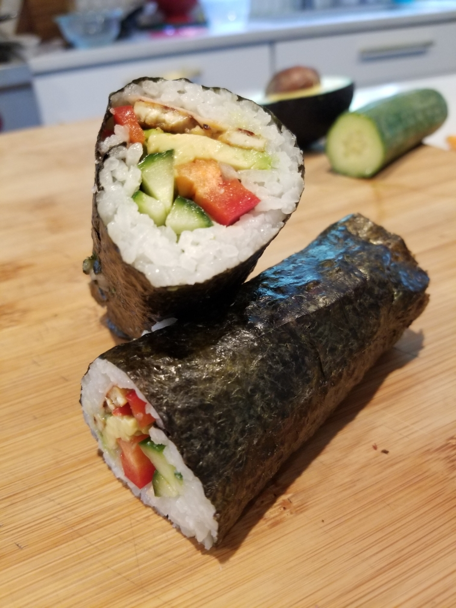

FAMILY
I have been blessed with an amazing family--loving parents and two sisters who make me laugh and keep me humble.
"Family is not an important thing. It's everything." - Michael J. Fox
I am so grateful that we are so close and feel blessed to know that we can be together forever.
 "Family is the compass that guides us. It's the inspiration to reach great heights, and our comfort when we occasionally falter." - Brad Henry
"Family is the compass that guides us. It's the inspiration to reach great heights, and our comfort when we occasionally falter." - Brad Henry
God knows me individually and knew the people I would need to get me through this life. He has a plan for everyone. God is so good.
SPORTS
For as long as I can remember, sports have been a part of my life. I played every sport you can imagine and probably some you haven't heard of.
Freshman year, I decided to give field hockey a try. My older sister had been playing for a few years, so, naturally, I wanted to play too. I ended up playing all 4 years of high school, made the varsity team sophomore year, and made it to state my junior and senior years.
We love a stylish queen.I also joined the tennis team Spring of my freshman year, and it was the best decision I ever made. Tennis has been a part of my life since I was 7 years old, but I didn't play competitively until high school. While COVID messed with a few seasons, I ended strong with a state finish junior and senior year--playing singles 1 my last year.
Me and my cute friends after our annual Pueblo tournament.COOKING
For as long as I can remember, I have loved to cook. I started making my own lunches in 1st grade, and I haven't stopped.
I started a baking business in high school where I specialized in sweet rolls, but I really enjoy experimenting in the kitchen. Here are some of my creations:

VACATIONS
My family has always prioritized experiences over things, and I am so grateful for that! There are still places I would love to visit, but I am so happy that I have been able to travel the world with my family.
New Zealand Bora Bora Colorado Belize Paris Washington, D.C.